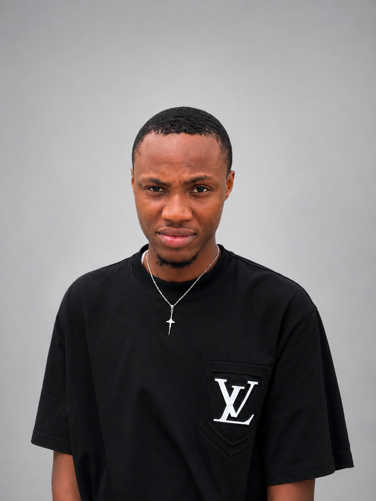

Responsive Website Development
Websites that work across mobile, tablet, and desktop.
I build modern, responsive, and user-focused websites while growing through real projects, continuous learning, and thoughtful collaboration.

What I do
Responsive Website Development
Websites that work across mobile, tablet, and desktop.
Frontend Development
Turning designs and ideas into functional user interfaces.
Landing Pages
Focused pages for products, services, campaigns, and businesses.
Website Redesign
Modernizing outdated layouts and improving the experience.
Business & Industry Websites
Thoughtful digital experiences for business, real estate, construction, electrical, and personal brands.
UI Implementation
Translating visual direction into accessible, maintainable frontend code.
How I add value
Current focus
Strengthening JavaScript, building real-world projects, learning backend fundamentals, and exploring AI-assisted workflows.